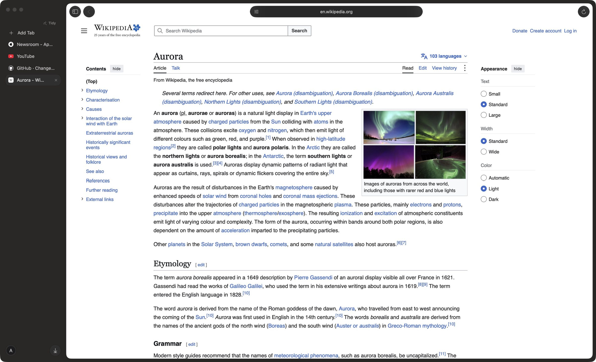
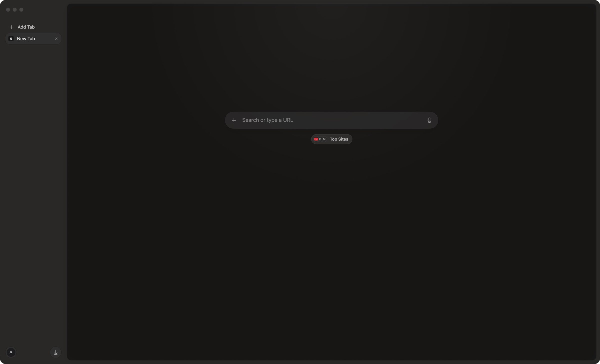

Tabs that rest
Tabs you haven’t touched in a while sleep on their own and wake right where you left them, scroll and all.
Pane is a calm, fast browser for Mac. Your tabs rest in a sidebar, pages sit on a soft card of glass, and nothing on the page follows you around.

Everyday, done right
Tabs you haven’t touched in a while sleep on their own and wake right where you left them, scroll and all.
Google, Apple and other sign-in popups open in their own small window and hand the login straight back.
Drop links or files on the sidebar to open them. Upload with Choose File. Print with ⌘P
Calls
Switch away from a Google Meet call and the whole call floats on top of everything, live, on every desktop. Nothing reconnects.
⌃⌘P to float it, or bring it back
New tab
Type an address, search the web, or jump to a tab that’s already open. No clutter, no feed, nothing moving in the background.

Float any video with ⌃⌘P, or leave a playing tab and it floats on its own.
Just the article, in clean type, with ⇧⌘R.
Two pages side by side, with a divider you can drag.
Separate sets of tabs, each with its own color and logins.
Saved and filled for you, unlocked with Touch ID.
Blocked out of the box, and paused per site in a click.
Made for the keyboard
Open new tabs as a bar over the page, like Arc, a clear frosted command bar, and a ⌃Tab switcher with live previews.
A new command bar that rises over the page like Spotlight, back, reload and the address at the top of the sidebar, and a New Tab page with one white search box.
Calmer glass on the bar above the page, no more white strip over Settings, and the bar fades in as the sidebar closes instead of dropping down.
Google Meet calls float in their own window as you switch tabs, with mute, camera, raise hand and leave buttons.
Pane is free. Set it as your browser for a week and see if the web feels a little quieter.